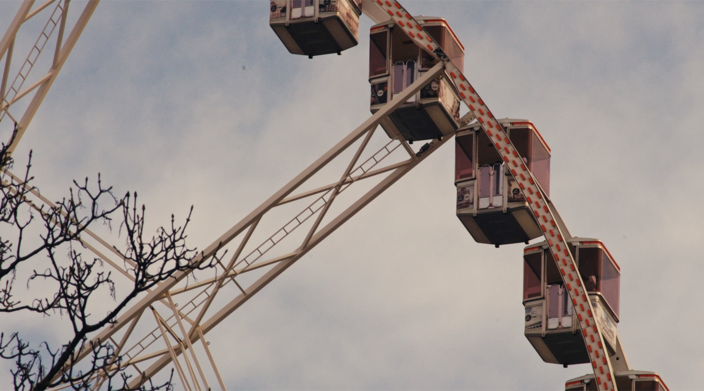
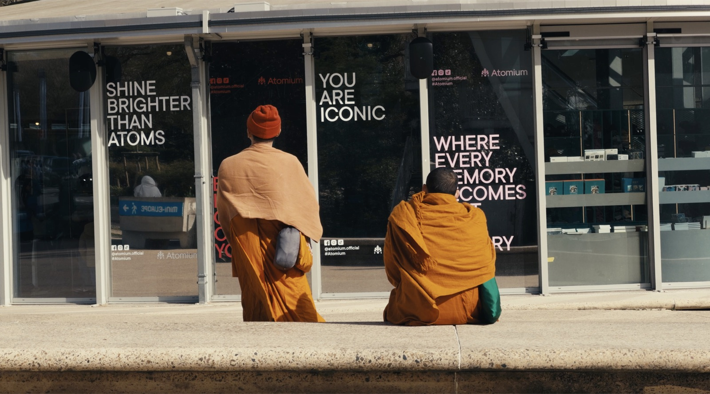
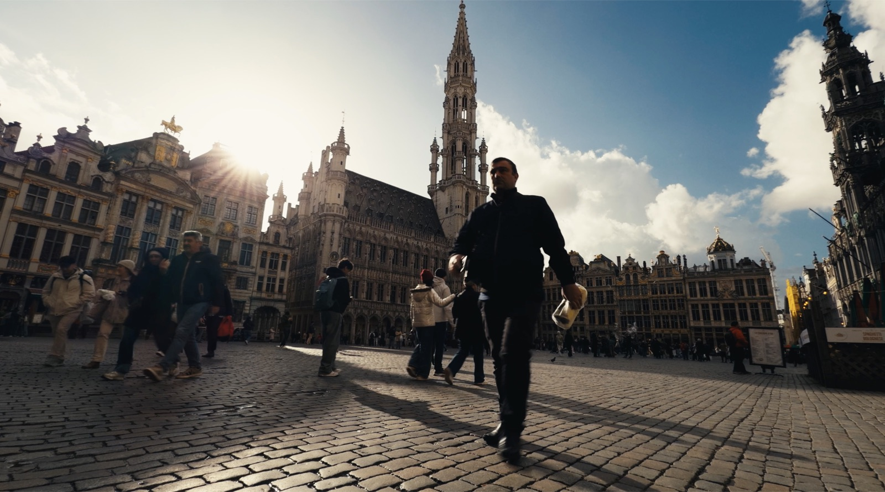
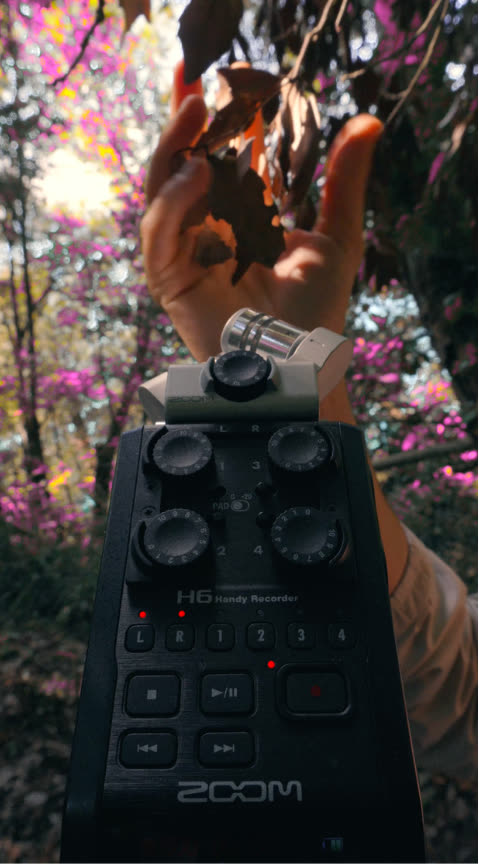

Dipartimento SX — creative audio/video department in Rome: creative consulting and direction, directing and video, music and sound design, web development and podcast studio
What we do
About
Dipartimento SX is a creative audio/video department based in Rome, Italy, working anywhere and in any situation.
We film documentaries, commercials, short films and anything that can be told with images.
We work with companies, brands, institutions and professionals. We help build a story and a visual positioning that lasts.
Consulting
& Creative
Direction
Our work begins with getting to know the client, and grows into a clearly defined communicative intent. We work with companies, brands, institutions and professionals in a personal way.


Directing, Documentaries
& Video
Our video team is made up of professionals with experience in cinema and documentary. Once a precise artistic direction is set, we are on set ourselves, which lets us remove the intermediate steps that can open gaps between the idea and the result.





Our team of musicians specialises in composing original scores and sound design, as well as recording location sound. Every stage of the sound work is aimed at heightening the images it accompanies, always with an inventive approach.
Music,
Sound Design
& Foley
Web Development,
UX & UI
We design and build websites from back to front end. We look after the aesthetics, the user experience (UX) and the interface (UI), writing html, css and javascript, react and webGL directly.
Podcast Studio
& Post-Production
We make our studio and our skills available for filming, podcasts, photography and visual experiments.